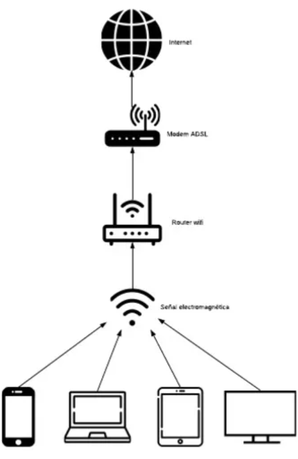

Alcance
O alcance do sinal Wi-Fi de qualquer ponto de acesso varia significativamente de dispositivo para dispositivo. Fatores que determinam o intervalo de um ponto de acesso incluem:
O alcance do sinal Wi-Fi de qualquer ponto de acesso varia significativamente de dispositivo para dispositivo. Fatores que determinam o intervalo de um ponto de acesso incluem:
Roteadores Wi-Fi são normalmente dispositivos de estado sólido e não possuem partes móveis, o que resulta em um consumo de energia muito baixo e, geralmente, ficam ligados 24 horas por dia para fornecer acesso ininterrupto à internet. Estimamos que um roteador Wi-Fi consuma de 2 a 20 watts, sendo 6 watts a média para um roteador sem fio.
O sinal de WiFi é transmitido pelos roteadores via ondas eletromagnéticas que se propagam na velocidade da luz. É medida em Hz, e opera nas frequências de 2.4 Ghz e 5 Ghz, dependendo do número de ciclos por segundo. A frequência de 2.4 Ghz trabalha com 2 opções de largura de banda, 20 Mhz e 40 Mhz, enquanto a de 5 Ghz trabalha em 20 Mhz, 40 Mhz, 80 Mhz e em novos equipamentos pode chegar até a 160 Mhz.
